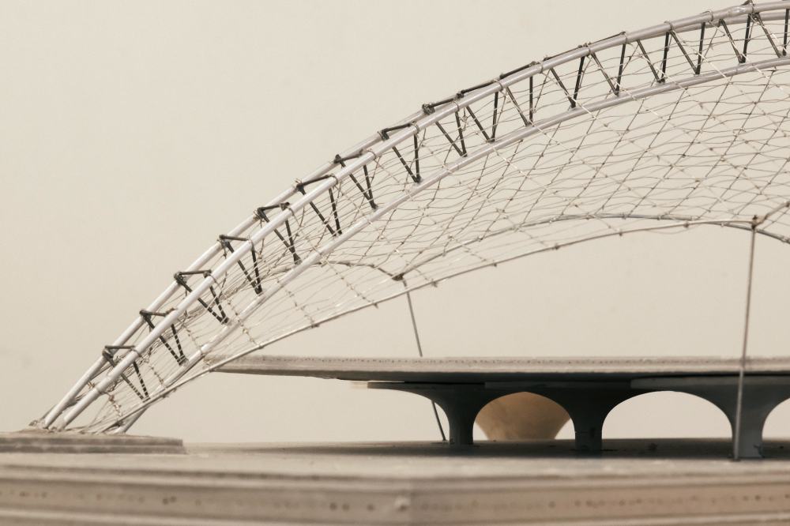
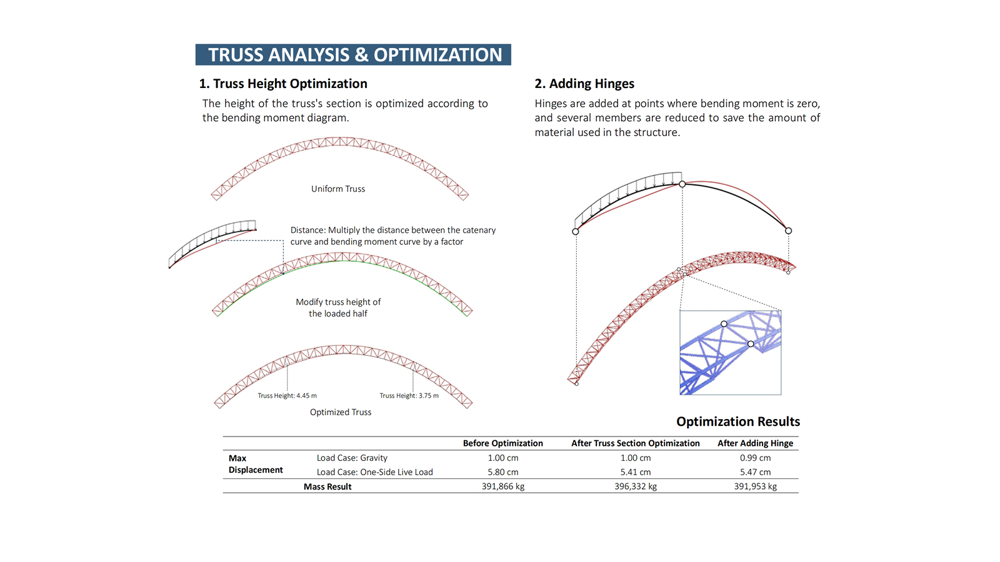
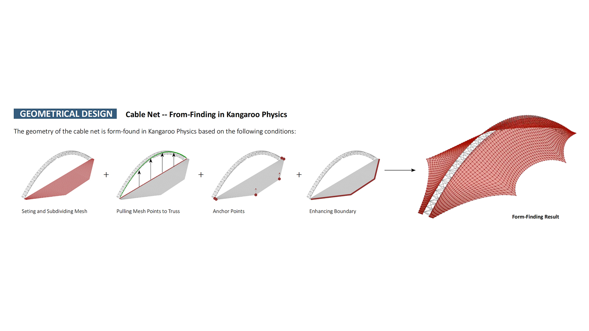
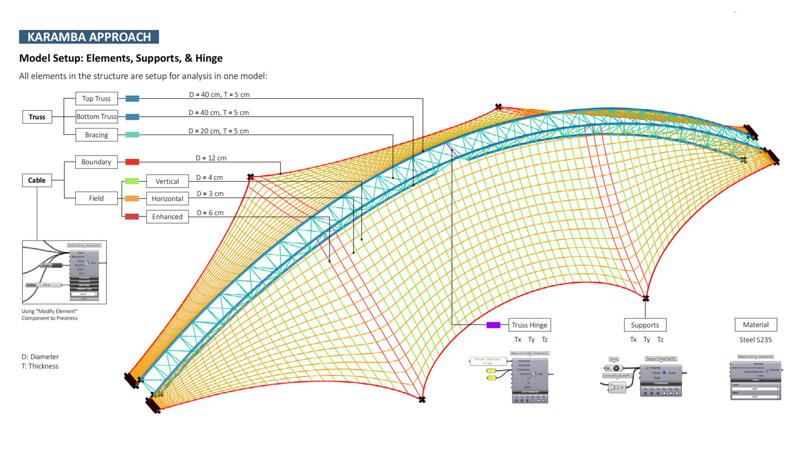
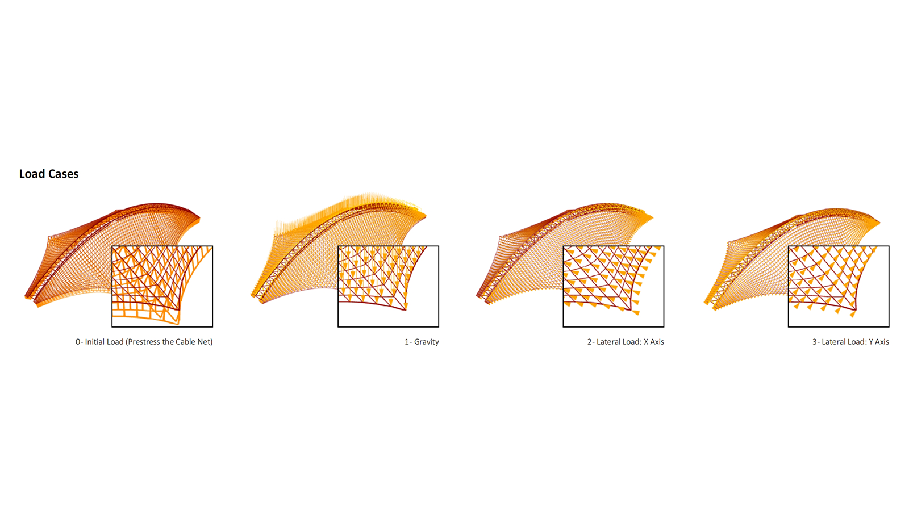
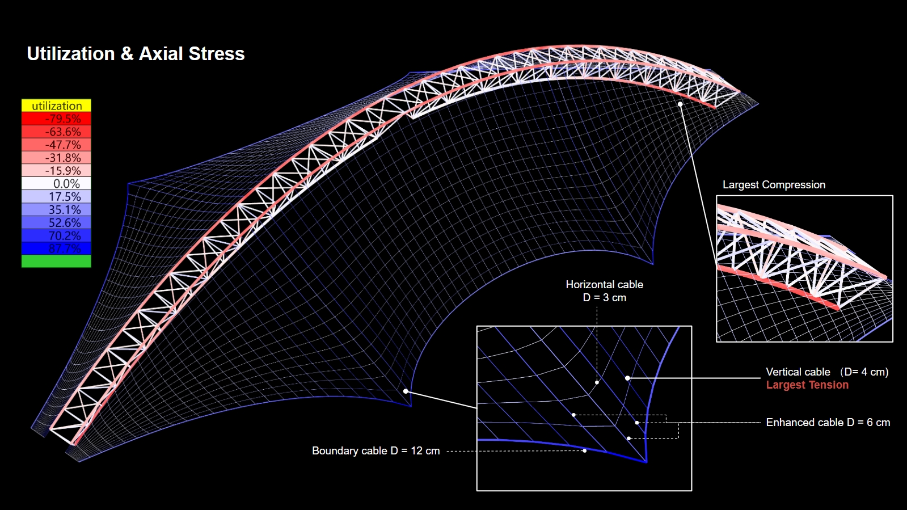
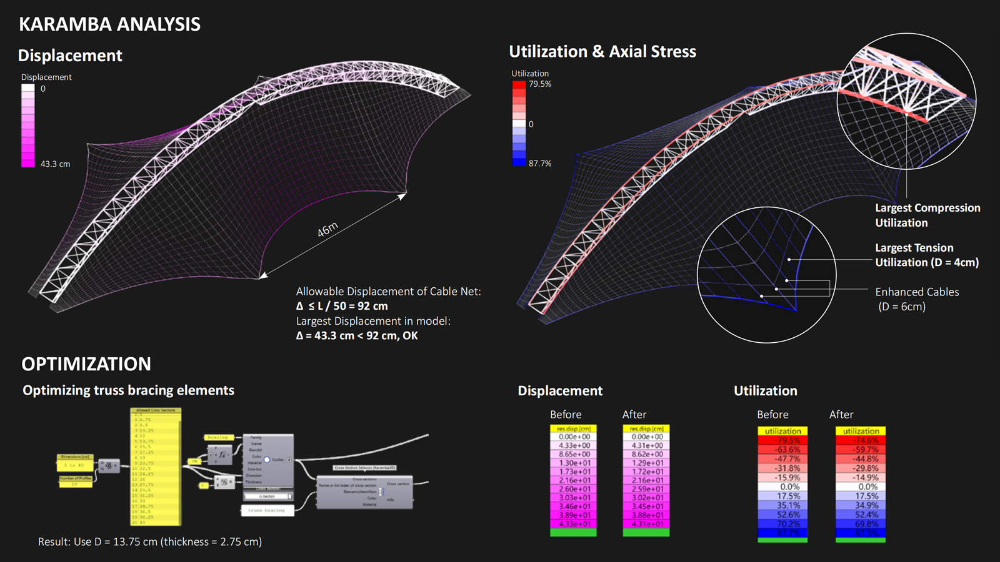
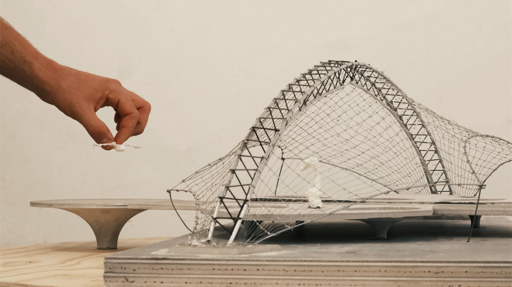

Design
Cable-net Vertiport
This project is a vertiport for drones located at Pier 52 east of San Fransisco, 10 miles north of San Fransisco International Airport (SFO). A steel truss with the cable net structure was developed to fit into the site conditions. We applied form-finding methods on both the truss and the cable-net, and optimized the structure based on structural analysis methods.






